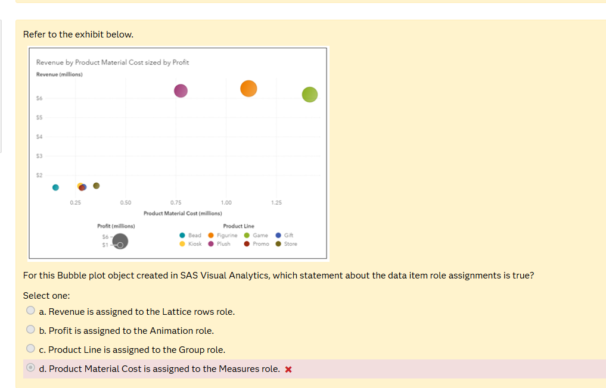

🫧 Bubble Plot — Practice Quiz QUIZ ▶
🫧 Topic 8: Bubble Plot — Basic
Q1: Product Line controls bubble colors. What SAS role?

✅ Group - Group role assigns colors by category.
❌ Measures: Measures control position or size not color.
❌ Lattice Columns: Lattice splits into panels it doesnt assign colors.
❌ Measures: Measures control position or size not color.
❌ Lattice Columns: Lattice splits into panels it doesnt assign colors.
Q2: How many measures does a bubble plot require?
✅ 3 - X axis Y axis and Size.
❌ 1 or 2: Need all three for position and size.
❌ 4: Only three required optional roles like Group and Animation are extra.
❌ 1 or 2: Need all three for position and size.
❌ 4: Only three required optional roles like Group and Animation are extra.
Q3: Revenue is on the Y-axis. What role is it assigned to?
✅ Measures (Y axis) - Revenue controls vertical position.
❌ Lattice rows: Lattice creates panels it doesnt assign axis data.
❌ Group: Group controls color.
❌ Animation: Controls time-based animation.
❌ Lattice rows: Lattice creates panels it doesnt assign axis data.
❌ Group: Group controls color.
❌ Animation: Controls time-based animation.
🫧 Topic 8: Bubble Plot — Advanced
Q4: The chart title says sized by Profit. What role does Profit play?
✅ Bubble SIZE - Bigger profit = bigger bubble. Sized by = Size measure.
❌ Y-axis: That is Revenue.
❌ Color: Sized by refers to size not color.
❌ Animation: Sized by is about bubble dimensions not time.
❌ Y-axis: That is Revenue.
❌ Color: Sized by refers to size not color.
❌ Animation: Sized by is about bubble dimensions not time.
Q5: Which is NOT available as a role for bubble plots?
✅ Columns/Rows - Those are for Crosstab only. Bubble plots use Lattice Columns/Rows.
❌ Group: IS available - controls bubble colors.
❌ Animation: IS available - for time animation.
❌ Lattice columns: IS available - for panel layouts.
❌ Group: IS available - controls bubble colors.
❌ Animation: IS available - for time animation.
❌ Lattice columns: IS available - for panel layouts.
Q6: 3 Measures make the bubble. The _____ gives it color.
✅ Group - 3 Measures make the bubble. The Group gives it color.
❌ Lattice: Creates panel splits not colors.
❌ Animation: Controls time not colors.
❌ Hidden: Stores data but doesnt display it.
❌ Lattice: Creates panel splits not colors.
❌ Animation: Controls time not colors.
❌ Hidden: Stores data but doesnt display it.